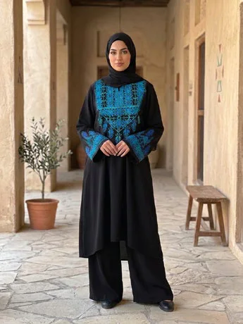

مطرز
من نحن
الدار هي البيت
في اللهجة الفلسطينية، الدار هي البيت. ومن هنا جاء الاسم: مساحة في إسطنبول تحفظ الثقافة والتقاليد الفلسطينية، وتبني جسورا بين الثقافات، وتدعم التمكين الاقتصادي للمرأة الفلسطينية.
نعرض فيها قطعا يدوية وأزياء تقليدية وتطريزا ورموزا ثقافية، كثير منها من صنع نساء في مناطق النزاع، وخاصة غزة.
- 01
دعم الحرفيين والحرفيات الفلسطينيينعمل يدوي يصل إلى من يقدره
- 02
تراث بمعايير جودة معاصرةقطع تقليدية تصلح لحياة اليوم
- 03
إحياء الذاكرة الثقافية بالإنتاجكل قطعة تحمل نقشة وحكاية
- 04
تراث يعيشه الأفراد والمؤسساتللبيت وللهدية وللمناسبة الرسمية